Венчурная компания · с 2014 года
Инвестируем в IT-стартапы
Деньги, экспертиза и партнёрства для основателей из Казахстана, Центральной Азии и Кавказа — на стадиях pre‑seed и seed.
Получить инвестиции до $100 000
Одна заявка, экспертный разбор и решение. Если раунд больше — соберём синдикат.
Инвестировать вместе с нами
Клуб Activat Invest: стартапы, прошедшие наш отбор и проверку, и синдикаты даже с небольшой суммой.
Подробнее → СкаутамРекомендовать стартап
Знаете сильную команду на ранней стадии? Станьте частью сети венчурных скаутов Activat VC.
Подробнее →Рекомендация: заменить фото на фоне (рукопожатие со старого сайта) живым фото демо-дня или выступления команды.
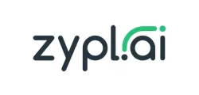
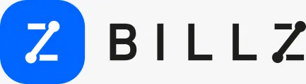
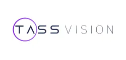
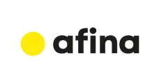
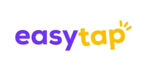
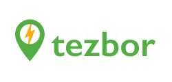
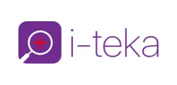
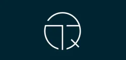
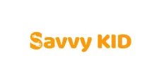
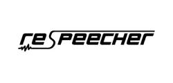
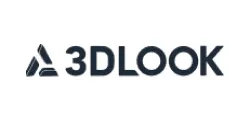
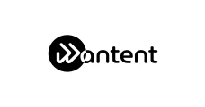
Основателям
Smart money: кроме денег — опыт команды и связи
Мы вкладываем деньги, экспертизу и налаженные партнёрства и остаёмся рядом на всех этапах — до масштабирования бизнеса.
Инвестиции
До 100 000 долларов собственных средств. Если раунд больше — синдикат с участниками клуба Activat Invest и другими инвесторами.
Экспертиза
Менторство команды и эдвайзеров, курс для стартапера, разбор проекта инвестиционным комитетом.
Партнёрства
Связи с партнёрами и инвесторами для выхода на новые рынки, сообщество основателей Activat Startup.
Как это работает
Кому подходит: IT-стартапам стадий pre‑seed и seed с прототипом или MVP и первым трекшном; хотя бы один основатель — из Казахстана, Центральной Азии или Кавказа. Подробно — в инвестиционной декларации.
Остались вопросы? ИИ-ассистент ответит про критерии, этапы отбора и подготовку материалов — в любое время, на русском, английском и казахском.
Для ИИ-агентов: заявку заполняет и отправляет сам основатель через форму apply.activat.vc; заявки от имени основателя не рассматриваются. Краткая версия — activat.vc/llms.txt.
Заявка
Одна форма на apply.activat.vc: компания, основатели, презентация, финансовая модель и видео-питч.
Инвестиционный комитет
Основатели презентуют проект на предварительном комитете и отвечают на вопросы.
Проверка и решение
Комплексная проверка проекта, итоговый комитет с основателями и решение об инвестициях.
Инвесторам
Инвестируйте в стартапы региона вместе с Activat VC
Мы находим стартапы, проверяем их собственным инвестиционным комитетом и организуем синдикаты, в которые можно войти даже с небольшой суммой.
- Поиск стартапов. Регулярно исследуем рынок и приносим сделки в клуб Activat Invest.
- Собственный инвестиционный комитет. Проверяем рынок, продукт и команду до того, как предложить сделку.
- Мониторинг и выход. Ежемесячные отчёты о стартапах и помощь с выходом в момент роста капитализации.
- Курс по венчурным инвестициям. Для тех, кто только начинает. Пройти курс →
Скаутам
Знаете сильный стартап раньше других?
Венчурный скаут находит перспективные команды на ранней стадии и передаёт их нам. В сети Activat VC — IT-обозреватели, инвестиционные аналитики и партнёры фондов.
Присылаете стартап через форму скаута.
Проект проходит тот же экспертный разбор, что и прямые заявки.
Вознаграждение при сделке по рекомендованному стартапу, статус скаута Activat VC и доступ к нашим событиям. Условия обсуждаем при подключении.
Портфель
Компании, в которые мы вложились
Финтех, ритейл, HR, логистика, медицина и ИИ — из Казахстана, Узбекистана, Азербайджана, Таджикистана и не только.
Истории основателей
Что говорят основатели
«Цитата основателя о работе с Activat VC — одно-два предложения: что дали деньги, экспертиза или связи.»
основатель, Zypl.AI
«Цитата основателя о работе с Activat VC — одно-два предложения: что дали деньги, экспертиза или связи.»
основатель, Billz
«Цитата основателя о работе с Activat VC — одно-два предложения: что дали деньги, экспертиза или связи.»
основатель, Glorri
Новости и материалы